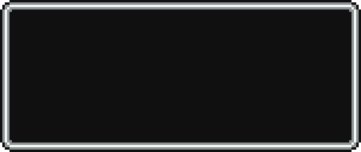
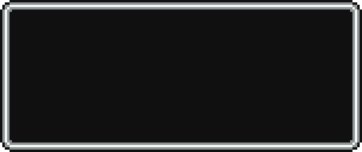

SAGA MOTHER
La saga EarthBound, también llamada como Mother, es una trilogía de juegos de rol creados por Shigesato Itoi en colaboración con HAL Laboratory Inc. también siendo distribuido por Nintendo. Dicha trilogía narra las historias de varios niños con poderes psíquicos que intentan salvar al mundo de la destrucción.
Hasta la fecha, la saga cuenta con tres juegos siendo esos EarthBound Beginnings (Mother en Japón), EarthBound (Mother 2 en Japón) y Mother 3, siendo éste último el único juego de la trilogía en ser vendido y distribuido solamente en Japón. Distintos elementos de la franquicia tales como personajes, música, objetos y lugares han aparecido en la saga Super Smash Bros. teniendo a Ness y a Lucas como personajes jugables.
POPULARIDAD
En 1989 se creo la saga de Earthbound, conocida como EarthBound Beginnings (Mother en Japón) con la historia de Ninten, un niño cuyo objetivo es salvar la tierra del caos de Giegue, un alienigena que tuvo relación con los antepasados de Ninten, este juego fue rechazado por Shigeru Miyamoto, por lo que tuvo un gran fracaso en la NES.
El juego tuvo una secuela EarthBound, con un lema llamado "Este juego apesta" en ingles más conocido "This game stinks" así para promocionar el juego, a Shigeru Miyamoto le gusto mucho este juego y pensó que sería un éxito en América, por lo que creó 2 millones de copias del juego, fue un rotundo fracaso allá en América por lo que sólo se vendió menos de 700 mil copias, este RPG quedó en el olvido, causando que nunca se lanzara Mother 3 en América.
El juego se volvió popular en su relanzamiento en la Consola Virtual de Wii, la gente comenzó hablar más de EarthBound, aparte se volvió popular debido a sus personajes en la saga de Super Smash Bros. Desde aquí comienza su popularidad.
A principios de los años 1900s, una pareja casada de jóvenes desapareció de un pueblo rural en algún lugar de América. Misteriosamente, dos años después vuelve el marido, George, quien no habla con nadie sobre lo que vivió durante ese tiempo y comenzó a hacer investigaciones por su propia cuenta. María, su esposa, nunca regresó.
Los poderes psíquicos de Ninten, según la investigación de George, fueron alguna vez usados por una raza de extraterrestres, los mismos que una vez abdujeron a George y a María: bisabuelos de Ninten. Mientras transcurre la historia, Ninten descubre pasajes del diario de George que explican mejor la fuente de todos sus poderes; y los verdaderos orígenes y planes de la presente invasión alienígena.
Durante tu aventura, te encuentras a diferentes personas bastante inusuales, y viajas por muchos lugares.
Justo al final, la nave madre aterriza y por fin Ninten se encuentra con Giegue. Tras cantar la canción de María, Giegue se queda indefenso e inamobible y decide retirarse, jurando vengarse.
En el año 199X, en un pueblo llamado Onett cae un meteorito en la Tierra, exactamente en una colina cerca de la casa de Ness, despertándolo a él, a su familia, sus vecinos y alertando a las autoridades del pueblo.
Después Ness va a ver a Lier X. Agerate, un amigo que quería mostrarle un secreto. Ness lo sigue hasta el final de unas cuevas donde Lier X. Agerate desenterró una misteriosa estatua sin saber que es un transmisor de energía maligna creado para esparcir la influencia de Giygas: la Evil Mani Mani.
Ness trata de llegar a Giant Step, pero el camino está bloqueado por una casa cerrada. Para conseguir la llave tiene que enfrentar al líder de una pandilla y a su robot. Tras derrotarlo Ness se dirige a Giant Step atravesando unas cuevas hasta encontrar un enemigo que dice ser el protector del santuario. Después de vencerlo sale de las cuevas y accede al santuario de Giant Step, un lugar en las colinas de Onett con una marca con forma de huella humana gigante (la cual le da el nombre).
Prologo
Claus, hermano de Lucas, le grita a Lucas para que despierte y juegue con él, entonces, Lucas se despierta y se cambia de ropa, su madre Hinawa no lo deja salir en pijamas, saliendo, su abuelo Alec lo acompaña a ir con Claus. Claus está jugando con los dinosaurios, corre y los tumba, éstos se vuelven a levantar, les gusta que los golpeen. Le enseña a correr y a tumbar dinosaurios. De repente, un Grillotopo se aproxima y se cree superior a Claus y Lucas y se enfrenta a ellos.
Tras la pelea, el Grillotopo se retira, Hinawa llega y le dice a Claus y Lucas que ya está lista la comida, luego Alec dice cómo se puede guardar en el juego y se va.
En casa, Hinawa sale y le escribe una carta a Flint, su esposo, que regresarán esa noche y la carta es enviada por una paloma, después, Hinawa regresa a la casa, pero el Ejército de los Puercareta llega con su tema principal en su nave, ésta se dirige a la ciudad al sur de la isla Ningunlugar.
 
